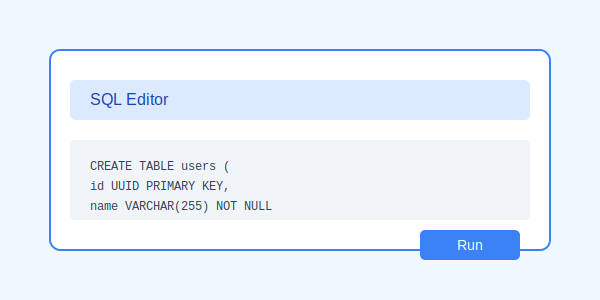

SJA Foundation Platform Setup Guide
Follow these steps to set up your investment platform
This guide will help you set up the SJA Foundation Investment Management Platform.
Step 1: Create a Supabase Project
- Go to supabase.com and sign up or log in
- Create a new project
- Note down your project URL and anon key (found in Project Settings > API)

Step 2: Set Up the Database Schema
- In your Supabase project, go to the SQL Editor
- Open the
supabase_schema.sql file from this project
- Copy the entire SQL script and paste it into the SQL Editor
- Run the script to create all required tables and functions
This step is critical! The platform will not work without the proper database schema.
Step 3: Create Storage Buckets
- In your Supabase project, go to Storage
- Create a new bucket named
kyc_documents
- Create another bucket named
payment_proofs
- Set both buckets to public (for this demo - in production, you should use more restrictive settings)
Step 4: Configure the Application
- Open
assets/js/config.js in your code editor
- Update the Supabase URL and anon key with your own values
- Alternatively, when you first open the application, you'll be prompted to enter these values
// Default configuration
const defaultConfig = {
supabaseUrl: 'YOUR_SUPABASE_URL',
supabaseAnonKey: 'YOUR_SUPABASE_ANON_KEY'
};
Step 5: Run the Application
- Install dependencies:
npm install
- Start the application:
npm start
- Open your browser and navigate to
http://localhost:3000
Step 6: Create an Admin User
- Register a new user through the application
- In your Supabase project, go to the Table Editor
- Open the
users table
- Find your user and change the
role field from client to admin
- Log out and log back in to access the admin dashboard